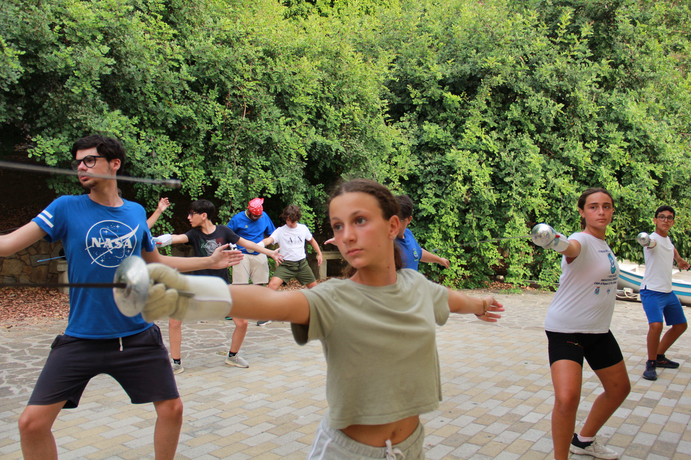

Aggiornamento Turni e Orari di Allenamento
Pubblicato il 10 Febbraio 2026

È stato pubblicato l'orario ufficiale delle lezioni per la seconda parte della stagione agonistica. Ricordiamo a tutti gli iscritti di verificare il proprio turno di appartenenza presso la segreteria del Collegio S. Ignazio.
Le sessioni di preparazione atletica integrata si terranno regolarmente prima delle lezioni individuali di scherma.